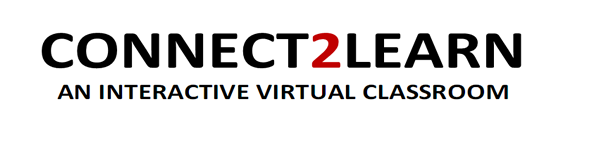
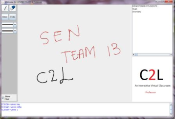

Electronics freak, hardware tinkerer, movie buff, android lover and blogger

Connect2Learn is a outcome of my Software Engineering course. Our instructor divided us into groups og 10 and we had to make a complete software within 3 months. This included in following all good programming practices along with huge documentation.
I was elected the group leader and we decided to make an open source virtual classroom software. All the currently available softwares in this domain are proprietary. Also, our main aim was to use minimal bandwidth.
To accomplish these goals, we made a software using Java and Java Media Framework was used for audio. The software can be installed in professor mode or student mode. THe professor mode has a whiteboard in which the professor writes and the students can see sitting remotely on thier screens. The professor also had a microphone to speak to the class alone with scribbling on the board. Also, we made a chat box in which the professor and the students can chat.
We used multicast as our underlying network protocol. For audio, we used Real time Transport Protocol (RTP), which is used in VoIP. Using multicast will help in using minimal bandwidth. To get the mutlicast id, we made a website in which a professor can register with the details of his lecture and the website will automatically give him an multicast IP. The students who want to attend that lecture can register on the site and put the proivded IP in the software.
The software also has a feature of storing the lectures and a facility for the student to ask a question at a click of the button. This project was made into a working prototype and is ready to be deployed. Connect2Learn is distribued under GNU GPLv3. The code is hosted on Google code and URL is Connect2Learn. The new update may come in August.

Professor view of the software